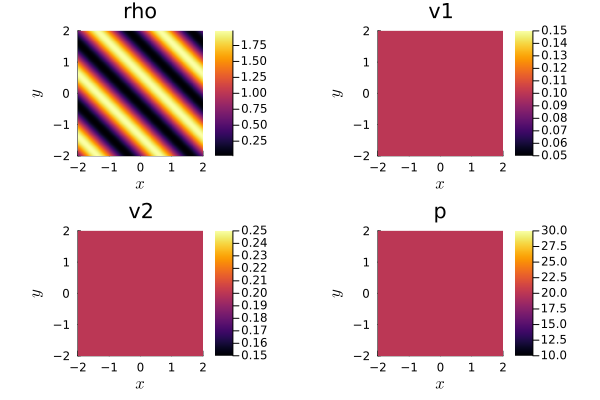

1.1: First steps in Trixi.jl: Getting started


Trixi.jl is a numerical simulation framework for conservation laws and is written in the Julia programming language. This tutorial is intended for beginners in Julia and Trixi.jl. After reading it, you will know how to install Julia and Trixi.jl on your computer, and you will be able to download setup files from our GitHub repository, modify them, and run simulations.
The contents of this tutorial:
- Julia installation
- Trixi.jl installation
- Running a simulation
- Getting an existing setup file
- Modifying an existing setup
Julia installation
Trixi.jl works with the current stable Julia release. More information about Julia support can be found in the README.md file. A detailed description of the installation process can be found in the Julia installation instructions. But you can follow also our short installation guidelines for Windows and Linux below.
Windows
- Download Julia installer for Windows from https://julialang.org/downloads/. Make sure that you choose the right version of the installer (64-bit or 32-bit) according to your computer.
- Open the downloaded installer.
- Paste an installation directory path or find it using a file manager (select
Browse). - Select
Next. - Check the
Add Julia to PATHoption to add Julia to the environment variables. This makes it possible to run Julia in the terminal from any directory by only typingjulia. - Select
Next, then Julia will be installed.
Now you can verify, that Julia is installed:
- Press
Win+Ron a keyboard. - Enter
cmdin opened window. - Enter in a terminal
julia.
Then Julia will be started. To close Julia enter exit() or press Ctrl+d.
Linux
- Open a terminal and navigate (using
cd) to the directory, where you want to store Julia. - To install Julia, get a link to the latest version of Julia from the Julia website, then download an archive file by executing:
wget https://julialang-s3.julialang.org/bin/linux/... # your link goes here - Unpack the downloaded file with:
tar xf julia-....tar.gz # your archive filename goes here
Now you can verify that Julia is installed entering <Julia directory>/bin/julia (e.g. julia-1.8.5/bin/julia) command in a terminal. <Julia directory> is the directory where Julia is installed. Then Julia will be started. To close Julia, enter exit() or press Ctrl+d.
Note, that further in the tutorial Julia will be started only typing julia in a terminal. To enable that, you have to add Julia to the PATH.
Trixi.jl installation
Trixi.jl and its related tools are registered Julia packages, thus their installation happens inside Julia. For a smooth workflow experience with Trixi.jl, you need to install Trixi.jl, OrdinaryDiffEq.jl and Plots.jl.
- Open a terminal and start Julia (Windows and Linux: type
julia). - Execute following commands:
import Pkg Pkg.add(["OrdinaryDiffEq", "Plots", "Trixi"])
Now you have installed all these packages. OrdinaryDiffEq.jl provides time integration schemes used by Trixi.jl and Plots.jl can be used to directly visualize Trixi.jl results from the Julia REPL.
Usage
Running a simulation
To get you started, Trixi.jl has a large set of example setups, that can be taken as a basis for your future investigations. In Trixi.jl, we call these setup files "elixirs", since they contain Julia code that takes parts of Trixi.jl and combines them into something new.
Now execute one of the examples using the trixi_include function. trixi_include(...) expects a single string argument with a path to a file containing Julia code. joinpath(...) join a path components into a full path. The examples_dir function returns a path to the examples folder that has been locally downloaded while installing Trixi.jl.
Let's execute a short two-dimensional problem setup. It approximates the solution of the compressible Euler equations in 2D for an ideal gas (CompressibleEulerEquations2D) with a weak blast wave as the initial condition.
Start Julia in a terminal and execute following code:
using Trixi, OrdinaryDiffEq
trixi_include(joinpath(examples_dir(), "tree_2d_dgsem", "elixir_euler_ec.jl"))[ Info: You just called `trixi_include`. Julia may now compile the code, please be patient.
████████╗██████╗ ██╗██╗ ██╗██╗
╚══██╔══╝██╔══██╗██║╚██╗██╔╝██║
██║ ██████╔╝██║ ╚███╔╝ ██║
██║ ██╔══██╗██║ ██╔██╗ ██║
██║ ██║ ██║██║██╔╝ ██╗██║
╚═╝ ╚═╝ ╚═╝╚═╝╚═╝ ╚═╝╚═╝
┌──────────────────────────────────────────────────────────────────────────────────────────────────┐
│ SemidiscretizationHyperbolic │
│ ════════════════════════════ │
│ #spatial dimensions: ………………………… 2 │
│ mesh: ………………………………………………………………… TreeMesh{2, Trixi.SerialTree{2}} with length 1365 │
│ equations: …………………………………………………… CompressibleEulerEquations2D │
│ initial condition: ……………………………… initial_condition_weak_blast_wave │
│ boundary conditions: ………………………… Trixi.BoundaryConditionPeriodic │
│ source terms: …………………………………………… nothing │
│ solver: …………………………………………………………… DG │
│ total #DOFs per field: …………………… 16384 │
└──────────────────────────────────────────────────────────────────────────────────────────────────┘
┌──────────────────────────────────────────────────────────────────────────────────────────────────┐
│ TreeMesh{2, Trixi.SerialTree{2}} │
│ ════════════════════════════════ │
│ center: …………………………………………………………… [0.0, 0.0] │
│ length: …………………………………………………………… 4.0 │
│ periodicity: ……………………………………………… (true, true) │
│ current #cells: ……………………………………… 1365 │
│ #leaf-cells: ……………………………………………… 1024 │
│ maximum #cells: ……………………………………… 10000 │
└──────────────────────────────────────────────────────────────────────────────────────────────────┘
┌──────────────────────────────────────────────────────────────────────────────────────────────────┐
│ CompressibleEulerEquations2D │
│ ════════════════════════════ │
│ #variables: ………………………………………………… 4 │
│ │ variable 1: …………………………………………… rho │
│ │ variable 2: …………………………………………… rho_v1 │
│ │ variable 3: …………………………………………… rho_v2 │
│ │ variable 4: …………………………………………… rho_e │
└──────────────────────────────────────────────────────────────────────────────────────────────────┘
┌──────────────────────────────────────────────────────────────────────────────────────────────────┐
│ DG{Float64} │
│ ═══════════ │
│ basis: ……………………………………………………………… LobattoLegendreBasis{Float64}(polydeg=3) │
│ mortar: …………………………………………………………… LobattoLegendreMortarL2{Float64}(polydeg=3) │
│ surface integral: ………………………………… SurfaceIntegralWeakForm │
│ │ surface flux: ……………………………………… flux_ranocha │
│ volume integral: …………………………………… VolumeIntegralFluxDifferencing │
│ │ volume flux: ………………………………………… flux_ranocha │
└──────────────────────────────────────────────────────────────────────────────────────────────────┘
┌──────────────────────────────────────────────────────────────────────────────────────────────────┐
│ AnalysisCallback │
│ ════════════════ │
│ interval: ……………………………………………………… 100 │
│ analyzer: ……………………………………………………… LobattoLegendreAnalyzer{Float64}(polydeg=6) │
│ │ error 1: …………………………………………………… l2_error │
│ │ error 2: …………………………………………………… linf_error │
│ │ integral 1: …………………………………………… entropy_timederivative │
│ save analysis to file: …………………… no │
└──────────────────────────────────────────────────────────────────────────────────────────────────┘
┌──────────────────────────────────────────────────────────────────────────────────────────────────┐
│ AliveCallback │
│ ═════════════ │
│ interval: ……………………………………………………… 10 │
└──────────────────────────────────────────────────────────────────────────────────────────────────┘
┌──────────────────────────────────────────────────────────────────────────────────────────────────┐
│ SaveSolutionCallback │
│ ════════════════════ │
│ interval: ……………………………………………………… 100 │
│ solution variables: …………………………… cons2prim │
│ save initial solution: …………………… yes │
│ save final solution: ………………………… yes │
│ output directory: ………………………………… D:\work\Trixi.jl.my\docs\build\tutorials\out │
└──────────────────────────────────────────────────────────────────────────────────────────────────┘
┌──────────────────────────────────────────────────────────────────────────────────────────────────┐
│ StepsizeCallback │
│ ════════════════ │
│ CFL number: ………………………………………………… 1.0 │
└──────────────────────────────────────────────────────────────────────────────────────────────────┘
┌──────────────────────────────────────────────────────────────────────────────────────────────────┐
│ Time integration │
│ ════════════════ │
│ Start time: ………………………………………………… 0.0 │
│ Final time: ………………………………………………… 0.4 │
│ time integrator: …………………………………… CarpenterKennedy2N54 │
│ adaptive: ……………………………………………………… false │
└──────────────────────────────────────────────────────────────────────────────────────────────────┘
┌──────────────────────────────────────────────────────────────────────────────────────────────────┐
│ Environment information │
│ ═══════════════════════ │
│ #threads: ……………………………………………………… 1 │
└──────────────────────────────────────────────────────────────────────────────────────────────────┘
────────────────────────────────────────────────────────────────────────────────────────────────────
Simulation running 'CompressibleEulerEquations2D' with DGSEM(polydeg=3)
────────────────────────────────────────────────────────────────────────────────────────────────────
#timesteps: 0 run time: 3.92000000e-05 s
Δt: 1.00000000e+00 └── GC time: 0.00000000e+00 s (0.000%)
sim. time: 0.00000000e+00 (0.000%) time/DOF/rhs!: NaN s
PID: Inf s
#DOFs per field: 16384 alloc'd memory: 2167.992 MiB
#elements: 1024
Variable: rho rho_v1 rho_v2 rho_e
L2 error: 6.25621384e-03 5.88786362e-03 5.81457821e-03 2.34267393e-02
Linf error: 1.06470791e-01 2.46283676e-01 1.37585923e-01 3.98685775e-01
∑∂S/∂U ⋅ Uₜ : 2.63255193e-19
────────────────────────────────────────────────────────────────────────────────────────────────────
#timesteps: 10 │ Δt: 1.0797e-02 │ sim. time: 1.0745e-01 (26.862%) │ run time: 6.9667e-02 s
#timesteps: 20 │ Δt: 1.1033e-02 │ sim. time: 2.1692e-01 (54.229%) │ run time: 1.3552e-01 s
#timesteps: 30 │ Δt: 1.1481e-02 │ sim. time: 3.3075e-01 (82.688%) │ run time: 2.0117e-01 s
────────────────────────────────────────────────────────────────────────────────────────────────────
Simulation running 'CompressibleEulerEquations2D' with DGSEM(polydeg=3)
────────────────────────────────────────────────────────────────────────────────────────────────────
#timesteps: 37 run time: 2.51543700e-01 s
Δt: 4.74704430e-04 └── GC time: 0.00000000e+00 s (0.000%)
sim. time: 4.00000000e-01 (100.000%) time/DOF/rhs!: 7.53761006e-08 s
PID: 8.11061736e-08 s
#DOFs per field: 16384 alloc'd memory: 2169.639 MiB
#elements: 1024
Variable: rho rho_v1 rho_v2 rho_e
L2 error: 6.17517156e-02 5.01822362e-02 5.01898945e-02 2.25871560e-01
Linf error: 2.93475829e-01 3.10812492e-01 3.10738039e-01 1.05403580e+00
∑∂S/∂U ⋅ Uₜ : -2.93050610e-18
────────────────────────────────────────────────────────────────────────────────────────────────────
────────────────────────────────────────────────────────────────────────────────────────────────────
Trixi.jl simulation finished. Final time: 0.4 Time steps: 37 (accepted), 37 (total)
────────────────────────────────────────────────────────────────────────────────────────────────────
────────────────────────────────────────────────────────────────────────────────
Trixi.jl Time Allocations
─────────────────────── ────────────────────────
Tot / % measured: 260ms / 96.0% 3.70MiB / 85.8%
Section ncalls time %tot avg alloc %tot avg
────────────────────────────────────────────────────────────────────────────────
rhs! 186 230ms 91.9% 1.23ms 9.33KiB 0.3% 51.4B
volume integral 186 168ms 67.2% 903μs 0.00B 0.0% 0.00B
interface flux 186 39.4ms 15.8% 212μs 0.00B 0.0% 0.00B
surface integral 186 9.71ms 3.9% 52.2μs 0.00B 0.0% 0.00B
prolong2interfaces 186 9.48ms 3.8% 51.0μs 0.00B 0.0% 0.00B
Jacobian 186 1.39ms 0.6% 7.50μs 0.00B 0.0% 0.00B
reset ∂u/∂t 186 1.24ms 0.5% 6.69μs 0.00B 0.0% 0.00B
~rhs!~ 186 338μs 0.1% 1.82μs 9.33KiB 0.3% 51.4B
prolong2mortars 186 28.2μs 0.0% 152ns 0.00B 0.0% 0.00B
prolong2boundaries 186 20.1μs 0.0% 108ns 0.00B 0.0% 0.00B
mortar flux 186 15.0μs 0.0% 80.6ns 0.00B 0.0% 0.00B
source terms 186 8.20μs 0.0% 44.1ns 0.00B 0.0% 0.00B
boundary flux 186 6.90μs 0.0% 37.1ns 0.00B 0.0% 0.00B
analyze solution 2 8.88ms 3.6% 4.44ms 56.2KiB 1.7% 28.1KiB
I/O 3 8.21ms 3.3% 2.74ms 3.11MiB 98.0% 1.04MiB
save solution 2 6.01ms 2.4% 3.01ms 3.02MiB 95.2% 1.51MiB
~I/O~ 3 2.17ms 0.9% 725μs 85.9KiB 2.6% 28.6KiB
get element vari... 2 24.2μs 0.0% 12.1μs 4.75KiB 0.1% 2.38KiB
save mesh 2 200ns 0.0% 100ns 0.00B 0.0% 0.00B
get node variables 2 200ns 0.0% 100ns 0.00B 0.0% 0.00B
calculate dt 38 3.18ms 1.3% 83.7μs 0.00B 0.0% 0.00B
────────────────────────────────────────────────────────────────────────────────To analyze the result of the computation, we can use the Plots.jl package and the function plot(...), which creates a graphical representation of the solution. sol is a variable defined in executed example and it contains the solution at the final moment of the simulation.
using Plots
plot(sol)To obtain list of all Trixi.jl elixirs execute get_examples. It returns the path to all example setups.
get_examples()362-element Vector{String}:
"D:\\work\\Trixi.jl.my\\examples\\dgmulti_1d\\elixir_advection_gauss_sbp.jl"
"D:\\work\\Trixi.jl.my\\examples\\dgmulti_1d\\elixir_euler_fdsbp_periodic.jl"
"D:\\work\\Trixi.jl.my\\examples\\dgmulti_1d\\elixir_euler_flux_diff.jl"
"D:\\work\\Trixi.jl.my\\examples\\dgmulti_2d\\elixir_advection_diffusion.jl"
"D:\\work\\Trixi.jl.my\\examples\\dg" ⋯ 19 bytes ⋯ "ection_diffusion_nonperiodic.jl"
"D:\\work\\Trixi.jl.my\\examples\\dgmulti_2d\\elixir_advection_diffusion_periodic.jl"
"D:\\work\\Trixi.jl.my\\examples\\dgmulti_2d\\elixir_euler_bilinear.jl"
"D:\\work\\Trixi.jl.my\\examples\\dgmulti_2d\\elixir_euler_brown_minion_vortex.jl"
"D:\\work\\Trixi.jl.my\\examples\\dgmulti_2d\\elixir_euler_curved.jl"
"D:\\work\\Trixi.jl.my\\examples\\dgmulti_2d\\elixir_euler_fdsbp_periodic.jl"
⋮
"D:\\work\\Trixi.jl.my\\examples\\unstructured_2d_dgsem\\elixir_shallowwater_ec.jl"
"D:\\work\\Trixi.jl.my\\examples\\un" ⋯ 29 bytes ⋯ "allowwater_ec_shockcapturing.jl"
"D:\\work\\Trixi.jl.my\\examples\\un" ⋯ 24 bytes ⋯ "ir_shallowwater_source_terms.jl"
"D:\\work\\Trixi.jl.my\\examples\\un" ⋯ 33 bytes ⋯ "wwater_three_mound_dam_break.jl"
"D:\\work\\Trixi.jl.my\\examples\\un" ⋯ 32 bytes ⋯ "owwater_twolayer_convergence.jl"
"D:\\work\\Trixi.jl.my\\examples\\un" ⋯ 30 bytes ⋯ "llowwater_twolayer_dam_break.jl"
"D:\\work\\Trixi.jl.my\\examples\\un" ⋯ 34 bytes ⋯ "water_twolayer_well_balanced.jl"
"D:\\work\\Trixi.jl.my\\examples\\un" ⋯ 34 bytes ⋯ "water_wall_bc_shockcapturing.jl"
"D:\\work\\Trixi.jl.my\\examples\\un" ⋯ 25 bytes ⋯ "r_shallowwater_well_balanced.jl"Editing an existing elixirs is the best way to start your first own investigation using Trixi.jl.
Getting an existing setup file
To edit an existing elixir, you first have to find a suitable one and then copy it to a local folder. Let's have a look how to download the elixir_euler_ec.jl elixir used in the previous section from the Trixi.jl GitHub repository.
- All examples are located inside the
examplesfolder. - Navigate to the file
elixir_euler_ec.jl. - Right-click the
Rawbutton on the right side of the webpage and chooseSave as...(orSave Link As...). - Choose a folder and save the file.
Modifying an existing setup
For example, we will change the initial condition for calculations that occur in elixir_euler_ec.jl. In this example we consider the compressible Euler equations in two spatial dimensions,
\[\frac{\partial}{\partial t} \begin{pmatrix} \rho \\ \rho v_1 \\ \rho v_2 \\ \rho e \end{pmatrix} + \frac{\partial}{\partial x} \begin{pmatrix} \rho v_1 \\ \rho v_1^2 + p \\ \rho v_1 v_2 \\ (\rho e +p) v_1 \end{pmatrix} + \frac{\partial}{\partial y} \begin{pmatrix} \rho v_2 \\ \rho v_1 v_2 \\ \rho v_2^2 + p \\ (\rho e +p) v_2 \end{pmatrix} = \begin{pmatrix} 0 \\ 0 \\ 0 \\ 0 \end{pmatrix},\]
for an ideal gas with the specific heat ratio $\gamma$. Here, $\rho$ is the density, $v_1$ and $v_2$ are the velocities, $e$ is the specific total energy, and
\[p = (\gamma - 1) \left( \rho e - \frac{1}{2} \rho (v_1^2+v_2^2) \right)\]
is the pressure. Initial conditions consist of initial values for $\rho$, $\rho v_1$, $\rho v_2$ and $\rho e$. One of the common initial conditions for the compressible Euler equations is a simple density wave. Let's implement it.
- Open the downloaded file
elixir_euler_ec.jlwith a text editor. - Go to the line with the following code:
Here,initial_condition = initial_condition_weak_blast_waveinitial_condition_weak_blast_waveis used as the initial condition. - Comment out the line using the
#symbol:# initial_condition = initial_condition_weak_blast_wave - Now you can create your own initial conditions. Add the following code after the commented line:
function initial_condition_density_waves(x, t, equations::CompressibleEulerEquations2D)
v1 = 0.1 # velocity along x-axis
v2 = 0.2 # velocity along y-axis
rho = 1.0 + 0.98 * sin(pi * (sum(x) - t * (v1 + v2))) # density wave profile
p = 20 # pressure
rho_e = p / (equations.gamma - 1) + 1/2 * rho * (v1^2 + v2^2)
return SVector(rho, rho*v1, rho*v2, rho_e)
end
initial_condition = initial_condition_density_wavesinitial_condition_density_waves (generic function with 1 method)- Execute the following code one more time, but instead of
path/to/filepaste the path to theelixir_euler_ec.jlfile that you just edited.using Trixi trixi_include(path/to/file) using Plots plot(sol)
Then you will obtain a new solution from running the simulation with a different initial condition.
Feel free to make further changes to the initial condition to observe different solutions.
Now you are able to download, modify and execute simulation setups for Trixi.jl.
Package versions
These results were obtained using the following versions.
using InteractiveUtils
versioninfo()
using Pkg
Pkg.status(["Trixi","OrdinaryDiffEq","Plots","ForwardDiff"],
mode=PKGMODE_MANIFEST)Julia Version 1.9.3
Commit bed2cd540a (2023-08-24 14:43 UTC)
Build Info:
Official https://julialang.org/ release
Platform Info:
OS: Windows (x86_64-w64-mingw32)
CPU: 6 × AMD Ryzen 5 4500U with Radeon Graphics
WORD_SIZE: 64
LIBM: libopenlibm
LLVM: libLLVM-14.0.6 (ORCJIT, znver2)
Threads: 1 on 6 virtual cores
Status `D:\work\Trixi.jl.my\docs\Manifest.toml`
[f6369f11] ForwardDiff v0.10.36
[1dea7af3] OrdinaryDiffEq v6.56.0
[91a5bcdd] Plots v1.39.0
[a7f1ee26] Trixi v0.5.46-pre `D:\work\Trixi.jl.my`This page was generated using Literate.jl.